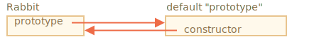
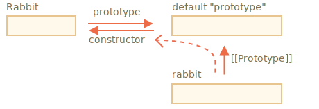

javascript.info读书笔记
本文记录自己在学习时的一些
notobal points。一是为了在读书的时候，对每一小节进行总结，加深印象，提高学习效果，避免“看完即忘”；二是为了在之后回顾的时候，可以迅速地“取精华而废糟粕”，避免把大量的时间浪费在人尽皆知的简单知识上。
Prototypes, inheritance
Prototypal inheritance
[[Prototype]]
- the references can’t go in circles. JavaScript will throw an error if we try to assign proto in a circle.
- The value of proto can be either an object or null. Other types are ignored.
__proto__是内部的[[Prototype]]的getter/setter，并不完全等同于[[Prototype]]。现代的JavaScript建议我们使用Object.getPrototypeOf/Object.setPrototypeOf来获取/设置原型。
Writing doesn’t use prototype
- 只有在读取属性时才会从原型链上找，赋值/删除操作直接在对象本身上进行。注意！访问属性(Accessor properties)是例外，因为赋值是由setter函数处理的。如：
1
2
3
4
5
6
7
8
9
10
11
12
13
14
15
16
17
18
19
20
21
22
23
24
25let user = {
name: "John",
surname: "Smith",
set fullName(value) {
[this.name, this.surname] = value.split(" ");
},
get fullName() {
return `${this.name} ${this.surname}`;
}
};
let admin = {
__proto__: user,
isAdmin: true
};
alert(admin.fullName); // John Smith (*)
// setter triggers!
admin.fullName = "Alice Cooper"; // (**)
alert(admin.fullName); // Alice Cooper, state of admin modified
alert(user.fullName); // John Smith, state of user protected
for…in loop
- The for..in loop iterates over inherited properties too.
- Almost all other key/value-getting methods, such as Object.keys, Object.values and so on ignore inherited properties.
这一节课后习题Why are both hamsters full可以看下
F.prototype
F.prototypeproperty is only used whennew Fis called, it assigns[[Prototype]]of the new object. 如果在创建一个对象后，改变F.prototype，则只会影响下一次用new F创建的对象的[[Prototype]]，已创建的对象的[[Prototype]]则不受影响。
Default F.prototype, constructor property
Every function has the
"prototype"property even if we don’t supply it.
The default"prototype"is an object with the only propertyconstructorthat points back to the function itself.
即，每个函数都默认有prototype属性，它是{constructor: function itself}，如下图所示。
设
Rabbit为构造函数，rabbit为Rabbit的实例，则rabbit可通过原型链访问到它的构造函数，如下图所示。即rabbit的constructor是从原型链上获取的。

需要注意的是，JavaScript itself does not ensure the right"constructor"value.
这一节的两道课后习题都可看下
本博客所有文章除特别声明外，均采用 CC BY-SA 4.0 协议 ，转载请注明出处！